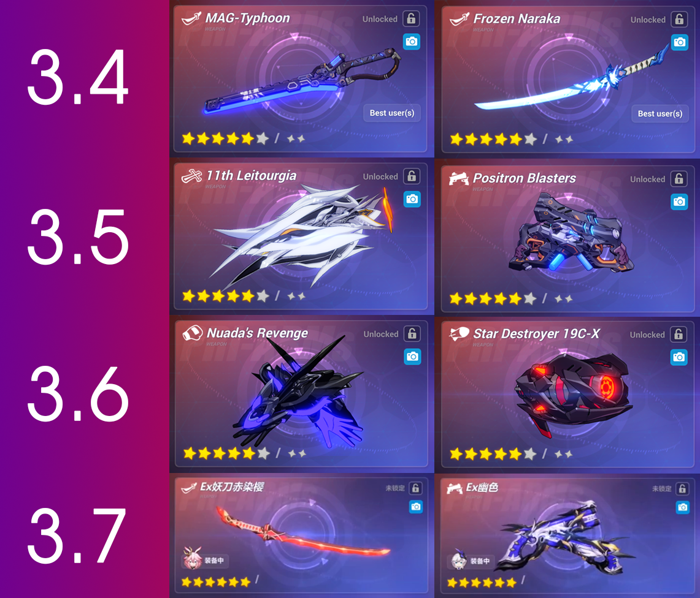

Esta guía esta destinada para jugadores que sean de nivel 81 en adelante
Conceptos a tomar en cuenta:
Los niveles de exalted se desbloquean al romper el candado. Este concepto consiste en una vez haber llegado al nivel 80 tendrás un cap de nivel. Ese cap se puede romper si deseas para poder ingresar a los ultimos niveles de cuenta
En exalted tenemos una nueba mecánica que es la creación de PRI arms
 Pri
Las PRI arms son básicamente el elemento más importante a la hora de estar en exalted. Estas son muy importantes porque los enemigos son mucho más difíciles
Materiales necesarios para hacer una PRI:
Nivel:
Materiales
50
100 einstein torus, 50 nanpceramics, 50 sc metals
55
100 einstein torus, 100 nanoceramics, 100 sc metals
60
100 einstein torus, 100 nanoceramics, 100 sc metals
65
150 einstein torus, 150 nanoceramics, 125 sc metals
Con esto en mente podremos hacer el contenido de exalted de manera más efectiva, pero los materiales para las PRI son bastante caros y es recomendable iniciar con la dps principal
Si desea saber más detalles del apartado de exalted. ingrese a este link:
(No es necesario seguir un orden en especial si se tiene una cuenta bien estructurada pero para la mayoría de casos es recomendable usar bien los recursos